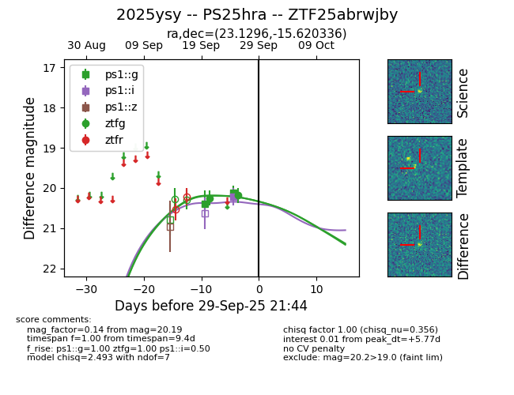
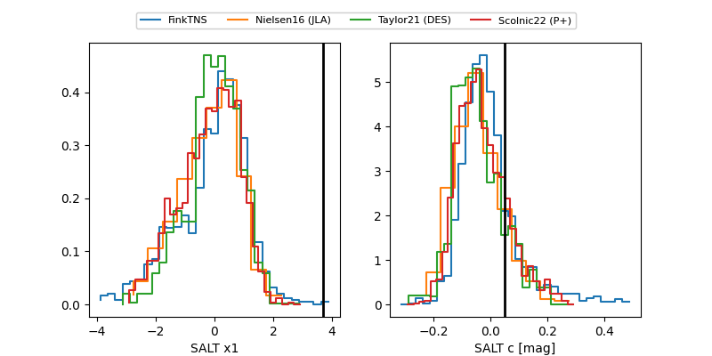

FINK: ZTF25abrwjby
Lasair: ZTF25abrwjby
ALeRCE: ZTF25abrwjby
TNS: 2025ysy
YSE: 2025ysy
ZTF25abrwjby (ztf,fink)
2025ysy (tns,yse)
PS25hra (panstarrs)
equatorial (ra, dec) = (23.1296,-15.62034)
galactic (l, b) = (164.6687,-75.05294)


last ps1::g=20.12, ps1::i=20.22, ztfg=20.19
2 ps1::g, 1 ps1::i, 2 ztfg detections